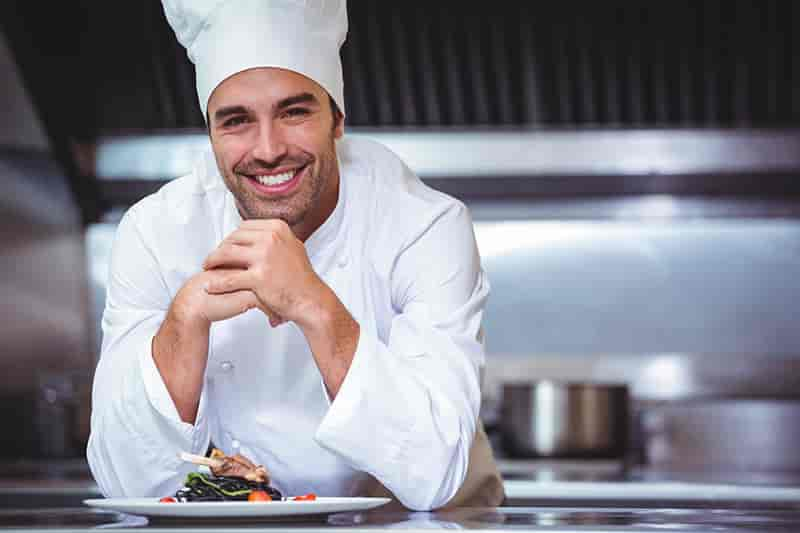

Мы поможем Вам создать кулинарные шедевры!
Наши преимущества
-
Индивидульный подход
Помогаем каждому студенту определиться с выбором правильного направления, индивидульно обсудив все преимущества данной сферы.
-
Комплексное обучение
Возможность пройти теоретический курс, после которого следует практическая часть в одном из топовых ресторанов нашей страны.
-
Квалифицированные преподватели
Наши преподаватели - это действующие шефы и су-шефы ресторанов как в Украине, так и за рубежом. Также, для учащихся проводятся мастер-классы от зарубежних специалистов.
-
Практика за рубежом
Три лучших студента из потока по окончании обучения имеют возможность пройти оплачиваемую практику за рубежом в одном из топовых ресторанов.
Направления для обучения
- Европейская кухня
- Французская
- Итальянская
- Восточно-европейская
- Скандинавская
- Азиатская кухня
- Китайская
- Японская
- Тайская
- Кондитерка
Наши мастера
-

Алексей Давыденко
Специалист европейской кухни
шеф-повар ресторана "Прованс" -
Сон Хин Мин
Специалист азиатской кухни
шеф-повар ресторана "Пекин" -

Мария Шевченко
Специалист кондитерского направлени
су-шеф ресторана "Шарлотка"